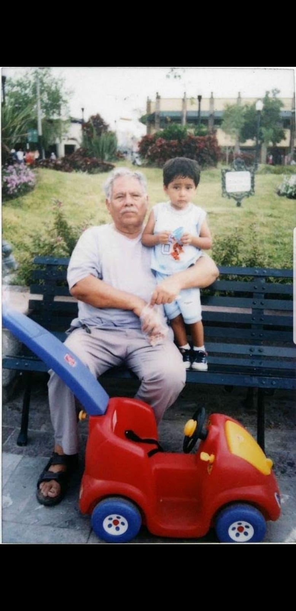

Contact Information
Phone number: 3321546942
Mail: kevin.aldrete1@outlook.com
Age: 20 years
Nacionality: Mexicana
social medias:
*Facebook: Kevin Aldrete
*Instagram: kvn.alex3
Degrees of study
Hight school: Escuela Secundaria Tecnica no. 14
Preparatory: Ecuela Cuauhtemoc
At the moment I'm studying the fifth semester of Informatic Engineering
Skills
º Use of computer technologies
for problem solving.
º Use of language compilers
medium and high level programming (C,
C++, Java, Python).
º Management of SQL database.
º Development of algorithms that can
accomplish specific tasks and
scalability.
º Development of paradigms of
structured programming and
object oriented.
º Management of static programming and
dynamic.
Work Experience
I don't have any work experience, but I'm totally willing to develop my self
in the laboral field as a software developer, and in this way acquire new skills.
Proyects Experience
Develop together with colleagues from theuniversity a software for an office of
lawyers with graphical interface and connector to a database of data, which allowed the administration
of construction projects, as well as employees, logs of each project and a history with the updates of each log.
Develop software for Dr. Alberto Trujillo that allowed to have a follow-up of appointments
of psychology, have a history of the sessions taken, along with statistics and observations
presented during the sessions, being fruitful information to measure the progress of the patient.
Personal Interests
I'd like to dedicate myself to development of mobile applications, continue learning about new programming
lenguages, and if the opportunity to venture into the field of war presents itself, I would take it without hesitation.
Programming Languages
C 80%
C++ 70%
Java 30%
Languages
Spanish C2
English B1
References
1- Jose Alejandro Aldrete Martinez
Mail: jose.aldrete1@hotmail.com
Phone number: 3338091630
2- Oliva Martinez Martinez
Mail: oliva.mar@gmail.com
Phone number: 3314669239